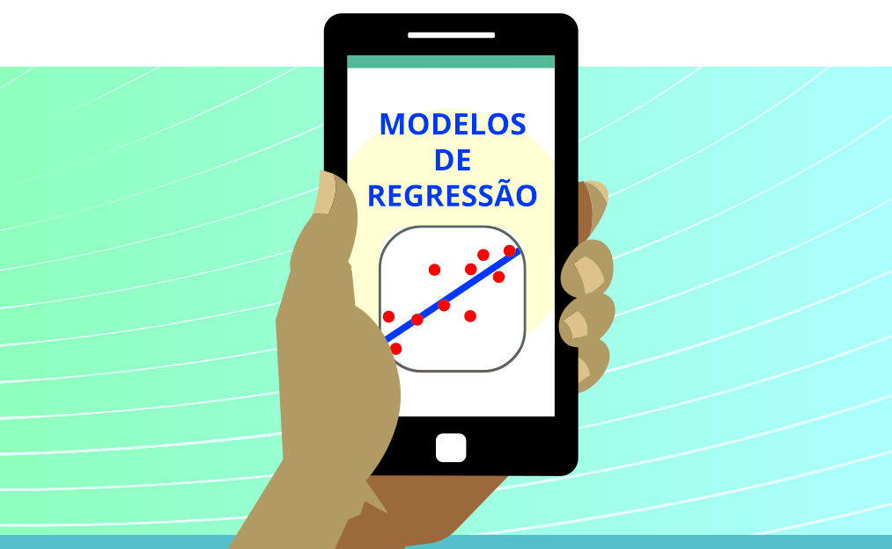

E é aí que entra o terceiro conceito que falamos no início desta aula: modelos de regressão. Clique em cada um dos números para conhecer suas características:



Modelos de regressão são capazes de realizar as mesmas comparações que os testes de hipóteses, além de fornecer um conjunto muito maior de informações e permitir avaliar relações entre mais de duas variáveis simultaneamente.
x
Atualmente, sem a limitação computacional, modelos de regressão são ajustados em milésimos de segundo, e implementações estão disponíveis nos principais pacotes estatísticos e linguagens de programação.
x
Uma das principais vantagens dos modelos de regressão sobre os testes de hipótese é justamente a capacidade de realizar análises multivariadas, ou seja, avaliar a relação entre mais de duas variáveis.
x
Por fim, surge o seguinte questionamento: existe alguma vantagem em avaliar as nossas variáveis de interesse juntas, em vez de testar uma por uma em análises bivariadas?
A resposta é: Sim, e muita! Acontece que, quando inserimos uma terceira variável no modelo, as demais são ajustadas por ela e entre si. Assim, o ajuste (controle por confusão) pode modificar o efeito de uma exposição no nosso desfecho.
x